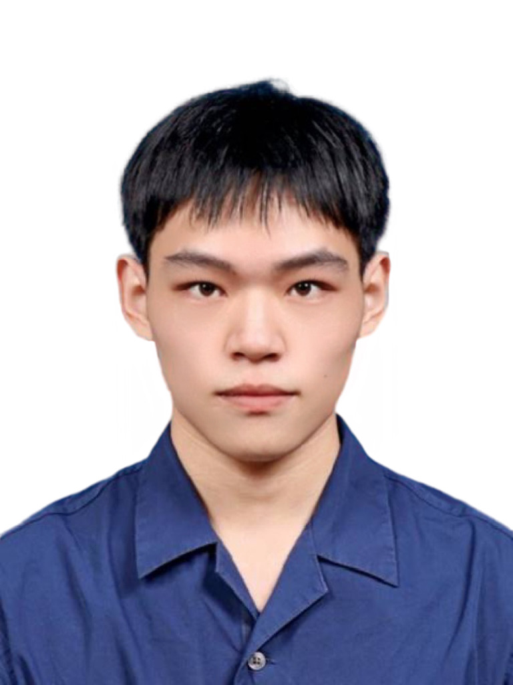

Style files were provided by Manaal Faruqui (thanks Manaal!), are licensed under a Creative Commons Attribution 3.0 Unported License.
Style files were provided by Manaal Faruqui (thanks Manaal!), are licensed under a Creative Commons Attribution 3.0 Unported License.

许融武，男，汉族，北京市人，2000年生。 目前是清华大学交叉信息院的硕士生，指导老师为徐葳教授。2018年至2022年，于清华大学计算机系进行学习，获得工学学士学位。高中毕业于北京市第四中学。Tempo: Confidentiality Preservation in Cloud-Based Neural Network Training
Rongwu Xu and Zhixuan Fang
Preprints.
The Earth is Flat because...: Investigating LLMs' Belief towards Misinformation via Persuasive Conversation
Rongwu Xu, Brian S. Lin, Shujian Yang, Tianqi Zhang, Weiyan Shi, Tianwei Zhang, Zhixuan Fang, Wei Xu, Han Qiu.
Preprints.
MISO: Legacy-compatible Privacy-preserving Single Sign-on using Trusted Execution Environments
Rongwu Xu, Sen Yang, Fan Zhang, Zhixuan Fang.
IEEE Euro S&P 2023, Delft, Netherlands.
LSync: A Universal Event-synchronizing Solution for Live Streaming
Yifan Xu, Fan Dang, Rongwu Xu, Xinlei Chen, Yunhao Liu.
IEEE INFOCOM 2022.
LifeRec: A Mobile App for Lifelog Recording and Ubiquitous Recommendation
Jiayu Li, Hantian Zhang*, Zhiyu He*, Rongwu Xu*, Pingfei Wu*, Min Zhang, Yiqun Liu, Shaoping Ma.
ACM SIGIR Conference on Human Information Interaction and Retrieval 2022.
(* 表示同等贡献)
"求其上者得其中，求其中者得其下，求其下者无所得。"
Style files were provided by Manaal Faruqui (thanks Manaal!), are licensed under a Creative Commons Attribution 3.0 Unported License.